library(TemporalHazard)
if (has_ggplot2) library(ggplot2)
data(avc)
avc <- na.omit(avc)
str(avc)
#> 'data.frame': 305 obs. of 11 variables:
#> $ study : chr "001C" "002C" "004C" "005C" ...
#> $ status : int 3 3 1 2 2 3 1 1 3 3 ...
#> $ inc_surg: int 4 3 2 3 1 2 3 2 3 3 ...
#> $ opmos : num 9.46 34.07 51.58 55 60.65 ...
#> $ age : num 69.2 53.7 286.1 154.6 48.4 ...
#> $ mal : int 0 0 0 1 0 0 0 0 0 0 ...
#> $ com_iv : int 1 1 1 1 1 1 1 1 1 1 ...
#> $ orifice : int 0 0 0 0 0 0 0 0 0 0 ...
#> $ dead : int 1 1 0 0 0 0 0 0 0 1 ...
#> $ int_dead: num 0.0534 0.3778 91.5337 111.608 106.8112 ...
#> $ op_age : num 654 1828 14759 8505 2933 ...
#> - attr(*, "na.action")= 'omit' Named int [1:5] 12 90 138 144 146
#> ..- attr(*, "names")= chr [1:5] "12" "90" "138" "144" ...Complete Clinical Analysis Walkthrough
From Kaplan-Meier baseline to validated multivariable model
2026-04-18
Source:vignettes/clinical-analysis-walkthrough.qmd
This vignette demonstrates the complete analytical workflow for a temporal parametric hazard analysis, mirroring the disciplined sequence used in the original SAS HAZARD system:
- Nonparametric baseline — Kaplan-Meier life table
- Shape fitting — start simple, build to multiphase
- Variable screening — calibrate covariates, assess functional form
- Multivariable model — covariate entry with fixed shapes
- Prediction — patient-specific risk profiles
- Validation — decile-of-risk calibration
This corresponds to the SAS programs ac.* → hz.* → lg.* → hm.* → hp.* → hs.*.
We use the AVC dataset (310 patients, atrioventricular canal repair) which has rich covariates and two identifiable hazard phases.
1 Data preparation
The AVC dataset contains 305 patients after removing incomplete cases. Key covariates include age at repair (age, in months), NYHA functional class (status), presence of malalignment (mal), and interventricular communication (com_iv).
2 Step 1: Nonparametric baseline
Before fitting any parametric model, establish the empirical survival curve using the Kaplan-Meier estimator. This is the benchmark against which all parametric fits will be compared.
km <- survival::survfit(survival::Surv(int_dead, dead) ~ 1, data = avc)
km_df <- data.frame(
time = km$time,
survival = km$surv * 100,
lower = km$lower * 100,
upper = km$upper * 100
)
ggplot(km_df, aes(time, survival)) +
geom_step(colour = "#D55E00", linewidth = 0.8) +
geom_ribbon(aes(ymin = lower, ymax = upper),
stat = "identity", alpha = 0.15, fill = "#D55E00") +
labs(x = "Months after AVC repair", y = "Survival (%)") +
coord_cartesian(ylim = c(0, 100)) +
theme_minimal()
#> Warning: Removed 1 row containing missing values or values outside the scale range
#> (`geom_ribbon()`).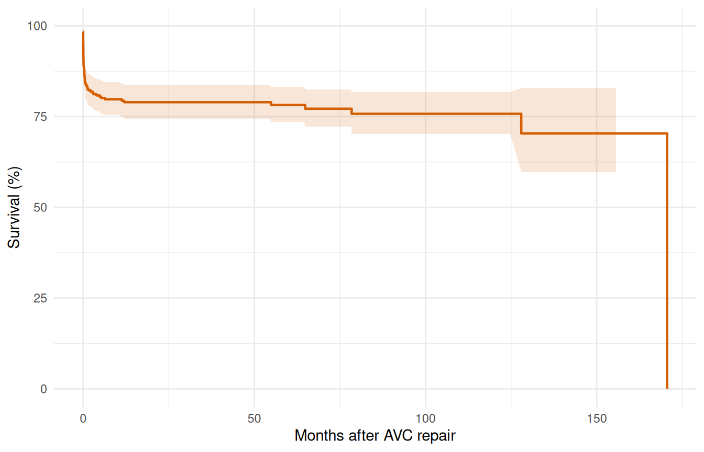
The KM curve shows a sharp early drop (operative mortality) followed by a roughly constant attrition rate. This two-phase pattern suggests an early CDF phase plus a constant phase — no obvious late rising hazard.
3 Step 2: Shape fitting — simple to complex
3.1 2a. Single-phase Weibull
Start with the simplest parametric model to establish a baseline fit.
fit_weib <- hazard(
survival::Surv(int_dead, dead) ~ 1,
data = avc,
dist = "weibull",
theta = c(mu = 0.05, nu = 0.5),
fit = TRUE
)
summary(fit_weib)
#> hazard model summary
#> observations: 305
#> predictors: 0
#> dist: weibull
#> engine: native-r-m2
#> converged: TRUE
#> log-lik: -234.775
#> evaluations: fn=34, gr=9
#>
#> Coefficients:
#> estimate std_error z_stat p_value
#> mu 3.498711e-05 0.000034554 1.012534 3.112826e-01
#> nu 2.043444e-01 0.023324005 8.761118 1.933229e-18The Weibull forces a monotone hazard shape. Let’s overlay it on the Kaplan-Meier to see where it fits well and where it doesn’t.
t_grid <- seq(0.01, max(avc$int_dead) * 0.9, length.out = 200)
surv_weib <- predict(fit_weib,
newdata = data.frame(time = t_grid),
type = "survival") * 100
ggplot() +
geom_step(data = km_df, aes(time, survival),
colour = "#D55E00", linewidth = 0.6) +
geom_line(data = data.frame(time = t_grid, survival = surv_weib),
aes(time, survival), colour = "#0072B2", linewidth = 0.8) +
labs(x = "Months after AVC repair", y = "Survival (%)") +
coord_cartesian(ylim = c(0, 100)) +
theme_minimal()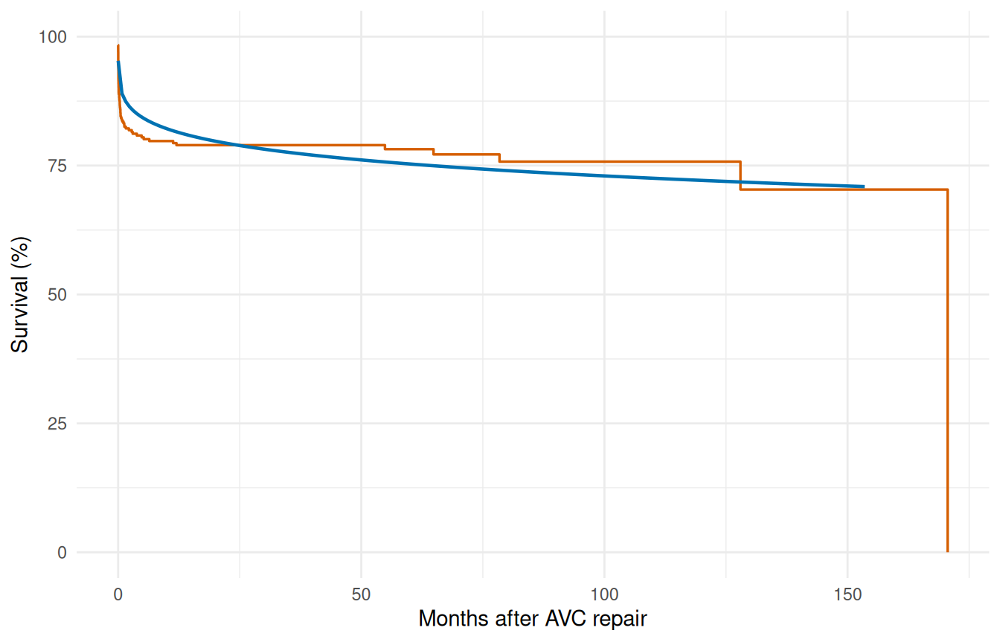
The single Weibull typically misses the sharp early drop — it compromises between the early and late time frames.
3.2 2b. Two-phase model (early CDF + constant)
Based on the KM shape, fit an early phase (resolving operative risk) plus a constant phase (background attrition).
fit_mp <- hazard(
survival::Surv(int_dead, dead) ~ 1,
data = avc,
dist = "multiphase",
phases = list(
early = hzr_phase("cdf", t_half = 0.5, nu = 1, m = 1,
fixed = "shapes"),
constant = hzr_phase("constant")
),
fit = TRUE,
control = list(n_starts = 5, maxit = 1000)
)
summary(fit_mp)
#> Multiphase hazard model (2 phases)
#> observations: 305
#> predictors: 0
#> dist: multiphase
#> phase 1: early - cdf (early risk)
#> phase 2: constant - constant (flat rate)
#> engine: native-r-m2
#> converged: TRUE
#> log-lik: -228.029
#> evaluations: fn=32, gr=10
#>
#> Coefficients (internal scale):
#>
#> Phase: early (cdf)
#> estimate std_error z_stat p_value
#> log_mu -1.4132735 0.04410012 -32.04693 2.422767e-225
#> log_t_half -0.6931472 NA NA NA
#> nu 1.0000000 NA NA NA
#> m 1.0000000 NA NA NA
#>
#> Phase: constant (constant)
#> estimate std_error z_stat p_value
#> log_mu -7.609476 NA NA NANote the use of fixed = "shapes" — we fix the temporal shape parameters and only estimate the scale (log_mu) for each phase. This matches the standard HAZARD workflow: shapes are set from clinical knowledge or preliminary exploration, then scales and covariates are estimated.
surv_mp <- predict(fit_mp,
newdata = data.frame(time = t_grid),
type = "survival") * 100
ggplot() +
geom_step(data = km_df, aes(time, survival),
colour = "#D55E00", linewidth = 0.6) +
geom_line(data = data.frame(time = t_grid, survival = surv_mp),
aes(time, survival), colour = "#0072B2", linewidth = 0.8) +
labs(x = "Months after AVC repair", y = "Survival (%)") +
coord_cartesian(ylim = c(0, 100)) +
theme_minimal()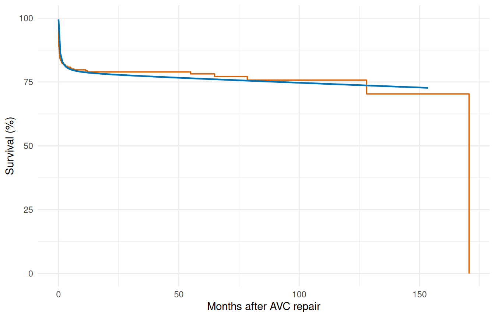
3.3 2c. Decomposed hazard
Visualize the per-phase contributions to the cumulative hazard.
decomp <- predict(fit_mp,
newdata = data.frame(time = t_grid),
type = "cumulative_hazard",
decompose = TRUE)
decomp_df <- data.frame(
time = t_grid,
total = decomp[, "total"],
early = decomp[, "early"],
const = decomp[, "constant"]
)
ggplot(decomp_df, aes(x = time)) +
geom_line(aes(y = total), linewidth = 0.9, colour = "black") +
geom_line(aes(y = early), linewidth = 0.7, colour = "#E69F00",
linetype = "dashed") +
geom_line(aes(y = const), linewidth = 0.7, colour = "#56B4E9",
linetype = "dashed") +
labs(x = "Months after AVC repair", y = "Cumulative hazard") +
theme_minimal()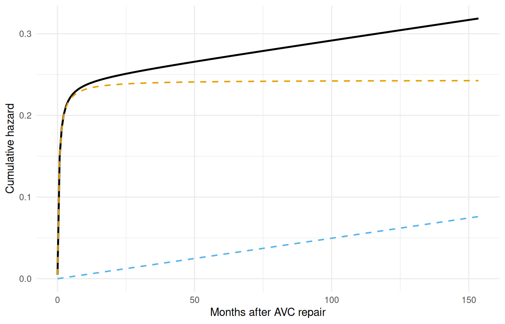
The early phase contributes most of its risk in the first few months, then levels off. The constant phase accumulates linearly over time.
4 Step 3: Variable screening
Before entering covariates into the hazard model, screen them for association with the outcome. This step corresponds to the lg.* programs in the SAS workflow.
4.1 3a. Univariable logistic screening
Use simple logistic regression of the event indicator on each covariate to get a quick ranking by strength of association.
covariates <- c("age", "status", "mal", "com_iv", "orifice",
"inc_surg", "opmos")
screen_results <- data.frame(
variable = covariates,
coef = numeric(length(covariates)),
p_value = numeric(length(covariates))
)
for (i in seq_along(covariates)) {
v <- covariates[i]
fml <- as.formula(paste("dead ~", v))
lg <- glm(fml, data = avc, family = binomial)
s <- summary(lg)$coefficients
if (nrow(s) >= 2) {
screen_results$coef[i] <- s[2, 1]
screen_results$p_value[i] <- s[2, 4]
}
}
screen_results <- screen_results[order(screen_results$p_value), ]
screen_results$significant <- ifelse(screen_results$p_value < 0.05,
"*", "")
screen_results
#> variable coef p_value significant
#> 2 status 0.965232352 2.538365e-08 *
#> 4 com_iv 1.413423027 4.916970e-06 *
#> 3 mal 1.027084963 6.478986e-04 *
#> 1 age -0.004914258 1.683468e-03 *
#> 5 orifice 1.635755221 3.440489e-03 *
#> 6 inc_surg 0.293339962 1.144172e-02 *
#> 7 opmos 0.001458721 6.552347e-014.2 3b. Functional form assessment
For continuous covariates that appear significant, examine whether the relationship with outcome is linear on the logit scale using LOESS smoothing. Non-linear patterns suggest a transformation may be needed.
ggplot(avc, aes(age, dead)) +
geom_point(alpha = 0.2, size = 1) +
geom_smooth(method = "loess", formula = y ~ x, se = TRUE,
colour = "#0072B2", fill = "#0072B2", alpha = 0.2) +
labs(x = "Age at repair (months)", y = "P(death)") +
theme_minimal()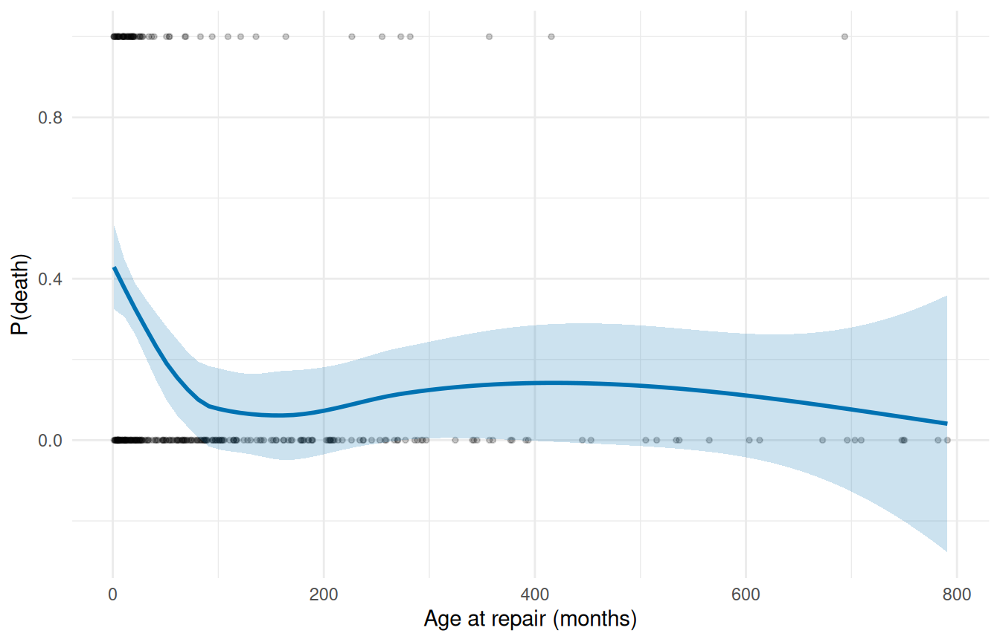
If the LOESS curve is roughly linear (or monotone), the covariate can enter the model untransformed. S-shaped or U-shaped curves suggest transformations (log, quadratic) may improve the fit.
5 Step 4: Multivariable model
5.1 4a. Manual specification
Enter the significant covariates from screening into the two-phase hazard model directly.
fit_mv <- hazard(
survival::Surv(int_dead, dead) ~ age + status + mal + com_iv,
data = avc,
dist = "multiphase",
phases = list(
early = hzr_phase("cdf", t_half = 0.5, nu = 1, m = 1,
fixed = "shapes"),
constant = hzr_phase("constant")
),
fit = TRUE,
control = list(n_starts = 5, maxit = 1000)
)
summary(fit_mv)
#> Warning in sqrt(d): NaNs produced
#> Multiphase hazard model (2 phases)
#> observations: 305
#> predictors: 4
#> dist: multiphase
#> phase 1: early - cdf (early risk)
#> phase 2: constant - constant (flat rate)
#> engine: native-r-m2
#> converged: TRUE
#> log-lik: -190.808
#> evaluations: fn=11, gr=1
#>
#> Coefficients (internal scale):
#>
#> Phase: early (cdf)
#> estimate std_error z_stat p_value
#> log_mu -3.605695584 NaN NA NA
#> log_t_half -0.693147181 NA NA NA
#> nu 1.000000000 NA NA NA
#> m 1.000000000 NA NA NA
#> age -0.002934522 0.00146656 -2.000956 0.045397123
#> status 0.619850638 NaN NA NA
#> mal 0.467467697 0.17964265 2.602209 0.009262544
#> com_iv 1.162696955 NaN NA NA
#>
#> Phase: constant (constant)
#> estimate std_error z_stat p_value
#> log_mu -9.6560397496 NA NA NA
#> age -0.0008940274 0.002475644 -0.3611292 0.71800288
#> status 1.0450950870 0.454449391 2.2996952 0.02146549
#> mal 0.6012599050 1.088336795 0.5524576 0.58063489
#> com_iv -1.0598349603 1.211734851 -0.8746426 0.38176838The coefficient table shows phase-specific covariate effects. A positive coefficient means higher hazard (worse prognosis). Interpretation: covariates scale the phase-specific hazard multiplicatively via exp(x * beta).
5.2 4b. Automated stepwise selection
The manual approach works when screening has already narrowed the candidate pool, but with a larger pool it helps to let the model choose. hzr_stepwise() runs forward, backward, or two-way selection against an existing hazard fit, scoring candidates with Wald p-values or ΔAIC. Defaults match SAS PROC HAZARD (SLENTRY = 0.30, SLSTAY = 0.20).
We start from a baseline with no covariates, offer the same screened candidate pool, and let the algorithm decide. For multiphase models the scope is a named list of one-sided formulas keyed by phase, so each phase can advertise its own candidate set; stepping operates per (variable, phase) pair, letting a covariate enter one phase and not another. Single-distribution models accept either a flat one-sided formula or a character vector of names.
base_mp <- hazard(
survival::Surv(int_dead, dead) ~ 1,
data = avc,
dist = "multiphase",
phases = list(
early = hzr_phase("cdf", t_half = 0.5, nu = 1, m = 1,
fixed = "shapes"),
constant = hzr_phase("constant")
),
fit = TRUE,
control = list(n_starts = 3, maxit = 500)
)
fit_step <- hzr_stepwise(
base_mp,
scope = list(
early = ~ age + status + mal + com_iv,
constant = ~ age + status + mal + com_iv
),
data = avc,
direction = "both",
criterion = "wald",
trace = FALSE,
control = list(n_starts = 2, maxit = 500)
)
fit_step
#> Stepwise selection (direction = both, criterion = wald, slentry = 0.30, slstay = 0.20)
#>
#> Step 1: ENTER status into early (p = 0.000)
#> Step 2: ENTER mal into early (p = 0.000)
#> Step 3: ENTER com_iv into early (p = 0.000)
#> Step 4: ENTER age into early (p = 0.034)
#> Step 5: ENTER status into constant (p = 0.064)
#> (no further action after 5 steps)
#>
#> Final model: 5 covariates, logLik = -192.10, AIC = 396.21The $steps table records every accepted action with its Wald statistic and p-value:
fit_step$steps[, c("step_num", "action", "variable", "phase",
"p_value", "aic")]
#> step_num action variable phase p_value aic
#> 1 1 enter status early 0.000000e+00 422.9675
#> 2 2 enter mal early 1.352419e-33 416.6295
#> 3 3 enter com_iv early 1.190955e-30 399.0333
#> 4 4 enter age early 3.363559e-02 397.3463
#> 5 5 enter status constant 6.358883e-02 396.2062The final model is the fit at the top of the object, reachable through the usual hazard accessors:
logLik_manual <- fit_mv$fit$objective
logLik_step <- fit_step$fit$objective
c(manual = logLik_manual, stepwise = logLik_step,
aic_manual = 2 * length(fit_mv$fit$theta) - 2 * logLik_manual,
aic_step = 2 * length(fit_step$fit$theta) - 2 * logLik_step)
#> manual stepwise aic_manual aic_step
#> -190.8075 -192.1031 407.6150 404.2062When the screening and stepwise agree on the same covariate set the log-likelihoods match exactly; when stepwise selects a leaner model AIC drops. For an AIC-driven run use criterion = "aic"; for a forward-only sweep direction = "forward". See ?hzr_stepwise for the full argument surface including force_in, force_out, and the max_move oscillation guard.
6 Step 5: Prediction
6.1 5a. Baseline survival curve
Generate the survival curve for a reference patient (median age, NYHA class 1, no malalignment, no interventricular communication).
ref_patient <- data.frame(
time = t_grid,
age = median(avc$age),
status = 1,
mal = 0,
com_iv = 0
)
surv_ref <- predict(fit_mv, newdata = ref_patient,
type = "survival") * 100
ggplot() +
geom_step(data = km_df, aes(time, survival),
colour = "#D55E00", linewidth = 0.6, alpha = 0.7) +
geom_line(data = data.frame(time = t_grid, survival = surv_ref),
aes(time, survival), colour = "#0072B2", linewidth = 0.8) +
labs(x = "Months after AVC repair", y = "Survival (%)") +
coord_cartesian(ylim = c(0, 100)) +
theme_minimal()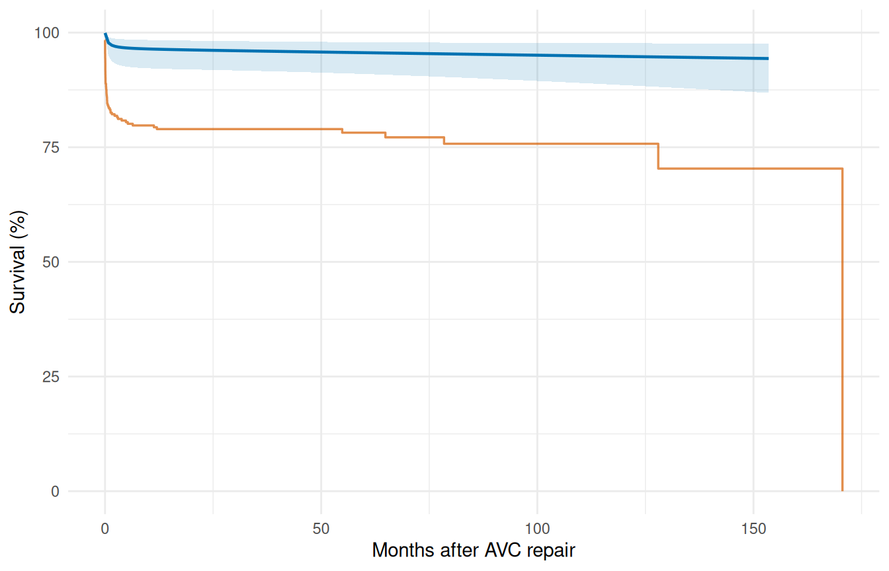
6.2 5b. Sensitivity analysis — risk factor comparison
Compare survival curves for a low-risk vs. high-risk patient profile to visualize the effect of covariates on long-term outcome.
low_risk <- data.frame(
time = t_grid,
age = quantile(avc$age, 0.25),
status = 1,
mal = 0,
com_iv = 0
)
#> Warning in data.frame(time = t_grid, age = quantile(avc$age, 0.25), status = 1,
#> : row names were found from a short variable and have been discarded
high_risk <- data.frame(
time = t_grid,
age = quantile(avc$age, 0.90),
status = 4,
mal = 1,
com_iv = 1
)
#> Warning in data.frame(time = t_grid, age = quantile(avc$age, 0.9), status = 4,
#> : row names were found from a short variable and have been discarded
surv_lo <- predict(fit_mv, newdata = low_risk, type = "survival") * 100
surv_hi <- predict(fit_mv, newdata = high_risk, type = "survival") * 100
sens_df <- data.frame(
time = rep(t_grid, 2),
survival = c(surv_lo, surv_hi),
profile = rep(c("Low risk", "High risk"), each = length(t_grid))
)
ggplot(sens_df, aes(time, survival, colour = profile)) +
geom_line(linewidth = 0.8) +
scale_colour_manual(values = c("Low risk" = "#0072B2",
"High risk" = "#D55E00")) +
labs(x = "Months after AVC repair", y = "Survival (%)",
colour = NULL) +
coord_cartesian(ylim = c(0, 100)) +
theme_minimal() +
theme(legend.position = "bottom")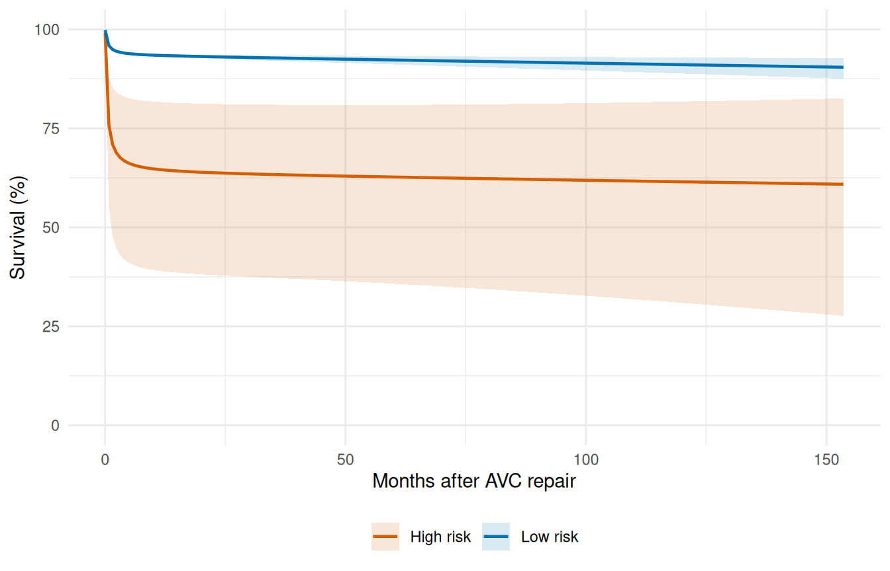
7 Step 6: Validation — decile-of-risk calibration
Partition patients into deciles by predicted risk and compare observed vs. expected event rates. Good calibration means the two track each other. This implements the workflow of the SAS deciles.hazard.sas macro.
cal <- hzr_deciles(fit_mv, time = max(avc$int_dead))
print(cal)
#> Decile-of-risk calibration at time = 170.5826
#> Included 68 observations (excluded 237 censored before horizon).
#> 10 groups, 68 observed events, 29.9 expected
#>
#> group n events expected observed_rate expected_rate chi_sq p_value
#> 1 6 6 0.849 1 0.142 31.200 2.29e-08
#> 2 7 7 1.800 1 0.258 15.000 1.09e-04
#> 3 7 7 2.040 1 0.292 12.100 5.18e-04
#> 4 7 7 2.390 1 0.342 8.870 2.89e-03
#> 5 7 7 2.710 1 0.388 6.770 9.25e-03
#> 6 6 6 2.470 1 0.412 5.050 2.46e-02
#> 7 7 7 3.250 1 0.464 4.330 3.74e-02
#> 8 7 7 3.830 1 0.547 2.630 1.05e-01
#> 9 7 7 4.770 1 0.682 1.040 3.08e-01
#> 10 7 7 5.780 1 0.826 0.255 6.13e-01
#> mean_survival mean_cumhaz
#> 0.858 0.153
#> 0.742 0.298
#> 0.708 0.345
#> 0.658 0.418
#> 0.612 0.491
#> 0.588 0.530
#> 0.536 0.624
#> 0.453 0.800
#> 0.318 1.150
#> 0.174 1.820
#>
#> Overall: chi-sq = 87.2 on 9 df, p = 5.9e-15
ggplot(cal, aes(x = group)) +
geom_col(aes(y = observed_rate), fill = "#56B4E9", alpha = 0.7) +
geom_point(aes(y = expected_rate), colour = "#D55E00", size = 3) +
geom_line(aes(y = expected_rate), colour = "#D55E00", linewidth = 0.5) +
scale_x_continuous(breaks = seq_len(nrow(cal))) +
labs(x = "Risk decile (1 = lowest)", y = "Event rate",
caption = paste("Overall chi-sq =",
round(attr(cal, "overall")$chi_sq, 2),
", p =",
format.pval(attr(cal, "overall")$p_value,
digits = 3))) +
theme_minimal()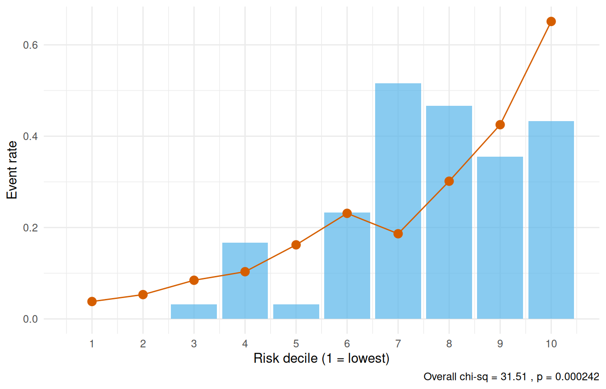
A non-significant overall chi-square statistic (p > 0.05) indicates adequate calibration — the model’s predictions are consistent with observed event rates across the risk spectrum.
7.1 Conservation of events check
The conservation-of-events principle states that a well-fitting model should predict the same total number of events as actually observed. hzr_gof() tracks this cumulatively over time — the residual (expected minus observed) should stay near zero.
gof <- hzr_gof(fit_mv)
print(gof)
#> Goodness-of-fit: observed vs. expected events
#> Distribution: multiphase | n = 305
#>
#> Total observed events: 68
#> Total expected events: 43.062
#> Final residual (E - O): -24.938
#> Conservation ratio (E/O): 0.633
#>
#> Use plot columns: time, km_surv, par_surv, cum_observed, cum_expected, residual
ggplot(gof, aes(x = time)) +
geom_step(aes(y = km_surv * 100), colour = "#D55E00", linewidth = 0.6) +
geom_line(aes(y = par_surv * 100), colour = "#0072B2", linewidth = 0.8) +
labs(x = "Months after AVC repair", y = "Survival (%)") +
coord_cartesian(ylim = c(0, 100)) +
theme_minimal()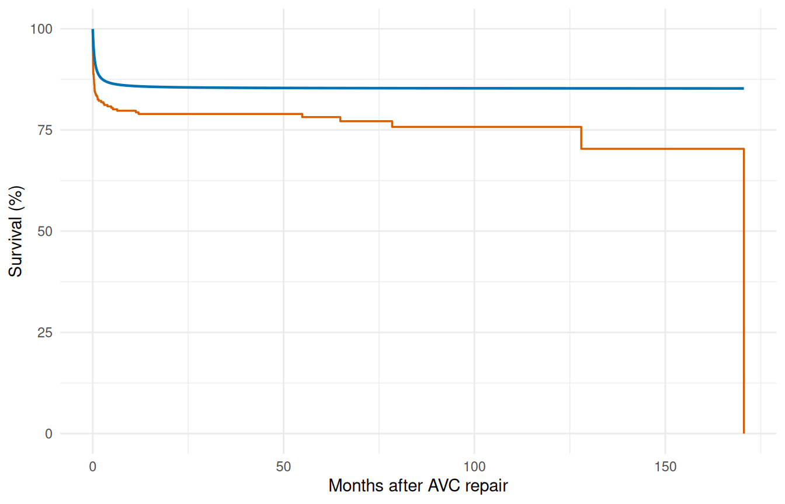
ggplot(gof, aes(x = time)) +
geom_line(aes(y = cum_observed), colour = "#D55E00", linewidth = 0.8) +
geom_line(aes(y = cum_expected), colour = "#0072B2",
linewidth = 0.8, linetype = "dashed") +
labs(x = "Months after AVC repair", y = "Cumulative events") +
theme_minimal()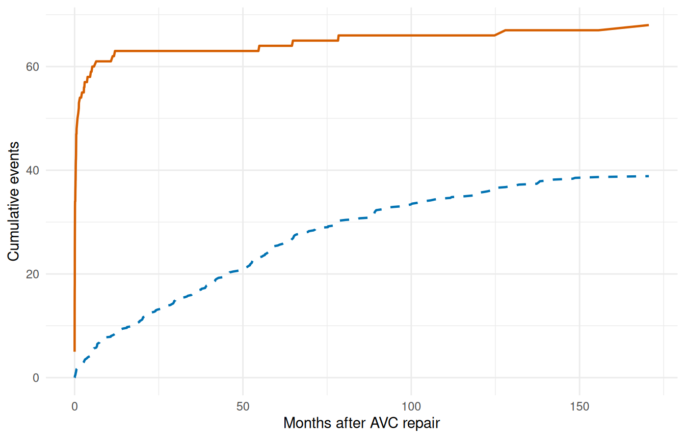
ggplot(gof, aes(x = time, y = residual)) +
geom_line(linewidth = 0.7, colour = "grey30") +
geom_hline(yintercept = 0, linetype = "dashed", colour = "grey60") +
labs(x = "Months after AVC repair",
y = "Residual (expected - observed)") +
theme_minimal()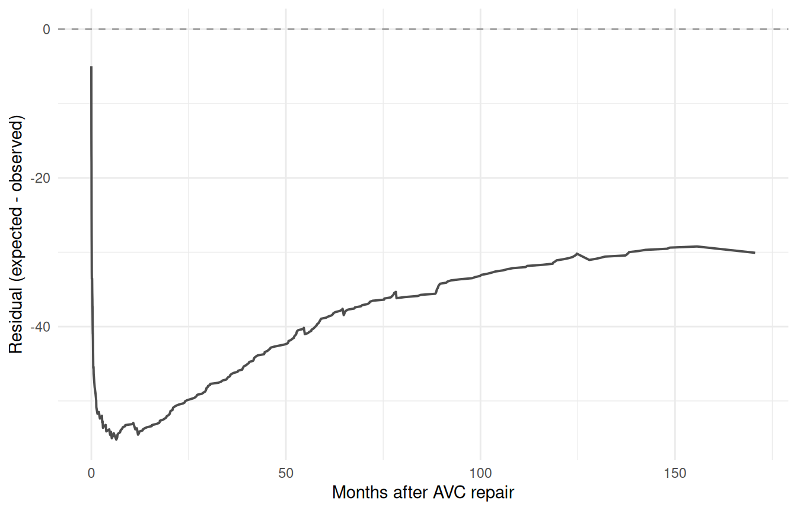
A residual that hovers near zero across the full time range indicates the model conserves events well. Persistent positive residual means the model overpredicts risk; persistent negative means it underpredicts.
8 Why not Cox regression?
The temporal parametric approach offers several advantages over Cox proportional hazards for this type of analysis:
| Feature | Cox (coxph) |
TemporalHazard |
|---|---|---|
| Proportional hazards required | Yes | No |
| Baseline hazard specified | No | Yes (parametric) |
| Multiple hazard phases | No | Yes (additive) |
| Patient-specific survival prediction | Approximate | Exact |
| Smooth extrapolation beyond data | No | Yes |
| Conservation of events check | No | Yes (hzr_gof()) |
| Interval censoring | Not standard | Supported |
The key insight is that many clinical outcomes exhibit non-proportional hazards: the risk factors that dominate early mortality (e.g., surgical complexity) differ from those driving late attrition (e.g., age, comorbidity). The multiphase model captures this naturally through phase-specific covariate effects.
9 Summary
The complete analytical workflow follows a disciplined sequence:
- Kaplan-Meier baseline — establish the empirical survival pattern
- Shape fitting — match the temporal shape, simple to complex
- Variable screening — logistic screening, LOESS functional form
- Multivariable model — enter covariates with fixed shapes
- Prediction — reference curves, sensitivity analysis
- Validation — decile calibration, conservation-of-events check
This sequence ensures that the temporal shape is established before covariates are introduced, and that the final model is validated against the observed data. See vignette("getting-started") for the minimal API workflow and vignette("mf-mathematical-foundations") for the mathematical details.